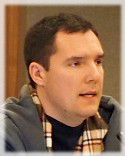

Bugzilla, lightning talks, and future summits
Konstantin Ryabitsev is one of the kernel.org administrators hired after the Linux Foundation took over responsibility for that site. One of the many services he is charged with managing is the bugzilla system. He came to the Kernel Summit asking if the community was happy with things and how could the kernel's bug tracker be made more useful?
Rafael Wysocki responded that his group is using it to track ACPI and power
management bugs; it works well and they are happy with it. Ted Ts'o said
that he tends to use specific bugs as a sort of miniature mailing-list

There was a request for better ways of tracking patches posted in response to tracked bugs. One developer complained that he would like to be able to assign bugs to others, but the system won't allow that. It seems that the "edit bugs" permission is required; Konstantin said he is willing to give that permission to anybody who requests it, but it was also suggested that perhaps that permission should just be given to anybody who has a kernel.org account.
Russell King asked how he could get out of receiving mail for bugs in subsystems that he no longer maintains; Konstantin's response was "procmail." More seriously, though, it's just a matter of sending him a note and such issues will be taken care of.
Dave Jones noted that bugzilla is the second-worst bug tracker available, with the absolute worst being "everything else." He went on to say that Fedora developers are interested in using upstream bug trackers more and that, in particular, Fedora's kernel developers would like to track bugs in the kernel.org bugzilla. Beyond that, though, they would like to feed bugs from Fedora's "Automatic Bug Reporting Tool" directly into the system. Anybody who has ever had to wade through a morass of ABRT bugs in the Fedora tracker might be forgiven for being worried about this idea, but, Dave said, things have gotten much better and there aren't a whole lot of duplicate bugs anymore. So the assembled group was reasonably accepting of this idea, seeing it as a replacement for the much-lamented kerneloops.org service if nothing else.
Lightning talks
Linus wanted the group to know that the 3.13 merge window is likely to be "chaos." He has a bunch of travel coming up, including an appearance at the Korea Linux Forum. So he will be traveling during the merge window, sometimes in places without any sort of reasonable network access.
Ted asked whether it would just make sense to delay the release of 3.12 until Linus is back. Linus responded that he could do that if people wanted, but that it really wouldn't make much difference in the end. There's going to be a period where he just isn't looking at pull requests, but, he emphasized, maintainers should still get their pull requests in early. Greg added that, during this time, urgent stable fixes could, contrary to normal policy, get into the stable tree prior to being merged into the mainline; he won't hold them while Linus is off the net.
Dave Airlie asked: who out there is pining for kerneloops.org? Anybody who would like to see better tracking of the problems being encountered by users might want to take a look at retrace.fedoraproject.org. It has plots of reports, information on specific problems, and more. It's a useful resource, he said, but he still wishes the kernel project had somebody tracking regressions.
Dave Jones talked about his work digging through the reports generated by Coverity's static analysis tool. During the 3.11 merge window, he said, the merging of the staging tree alone added 435 new issues to the database. He's been working on cleaning out the noise, but there are still over 5000 open issues there. A lot of them are false positives or failures on the tool's part to understand kernel idioms; that noise makes it hard to see the real bugs. He's trying to clean things up over time.
He has been given the permission to allow others to see the problem list; interested developers are encouraged to contact him. He is also able to see who else is looking at the problems. A few of them are kernel developers, he said, but most of the people looking at problem reports have no commits in the tree. Instead, they work for government agencies, defense contractors, and commercial exploit companies. The list "gave him the creeps," he said. Should those people be kicked out of the system? It might be possible, but they could then just buy their own Coverity license or run a tool like smatch instead, so there would be little value in doing so.
Wireless network drivers are the leading source of problem reports, followed by misc drivers, SCSI drivers, and network drivers as a whole. In general, he said, the "dark areas of the kernel" are the ones needing the most attention.
Mathieu Desnoyers asked whether people working on their own static analysis tools should be looking at Coverity's results. That was acknowledged to be a gray area. Coverity does not appear to be a litigious company, but people working in that area might still want to steer clear of Coverity's results.
Future summits
Ted Ts'o closed out the day by asking: were developers happy with how the kernel summit went, and what would they like to see changed? The participants seemed generally happy, but there were a couple of complaints that the control group discussion was boring to many. That follows a longstanding Kernel Summit trend: highly technical subjects are generally considered to be better addressed in a more specialized setting.
Much of the discussion was related to colocation with other events. From a show of hands, only about 20% of the Kernel Summit attendees found their way over to LinuxCon, which was happening that same week. The separation of the venues (LinuxCon was a ten-minute walk away) certainly didn't help in that regard. In general, there were grumbles about how there was too much going on, or that the "cloud stuff" (CloudOpen was also running at the same time) is taking over.
Should the Kernel Summit be run as a standalone event? The consensus seemed to be that an entirely standalone summit doesn't work, but that, with enough minisummits, it might be able to go on its own. Should the summit be colocated with the Linux Plumbers Conference, and possibly away from everything else? One problem with that is that, like the summit, LPC is a high-intensity event; the two together make for a long week. Still, a straw poll indicated that most of the participants favored putting those two conferences together.
Eventually the discussion wound down. The group headed off for the group photo, followed by a nice dinner and the TAB election.
[Next: Minisummit reports].
| Index entries for this article | |
|---|---|
| Kernel | Debugging |
| Conference | Kernel Summit/2013 |
Posted Oct 30, 2013 9:44 UTC (Wed)
by compudj (subscriber, #43335)
[Link]
Mathieu
Posted Oct 30, 2013 12:48 UTC (Wed)
by johill (subscriber, #25196)
[Link] (1 responses)
Posted Oct 30, 2013 16:59 UTC (Wed)
by blackwood (guest, #44174)
[Link]
Bugzilla, lightning talks, and future summits
Bugzilla, lightning talks, and future summits
Bugzilla, lightning talks, and future summits